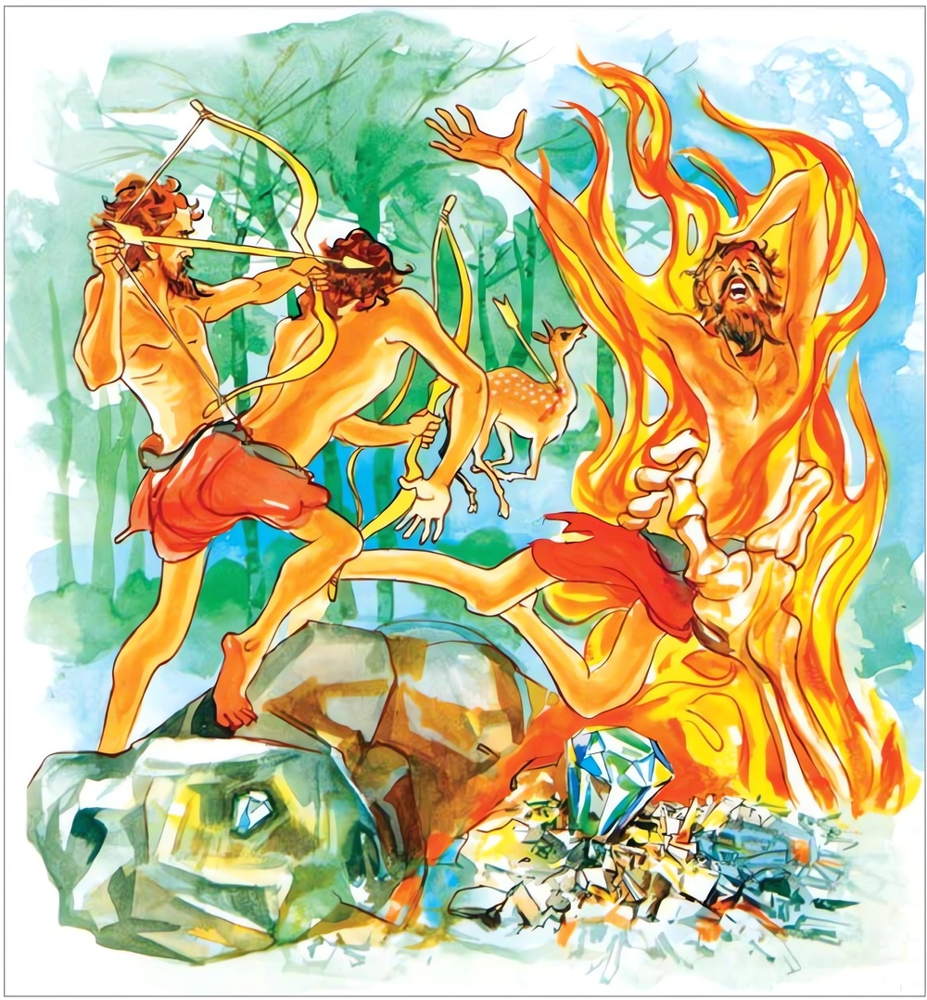

12-5 මහාකාලයාට වූ විපත
මෙම කතාව ධම්මපද අටුවාවෙන් ද කියවන්න.
අත්තනා’ව කතං පාපං අත්තජං අත්තසම්භවං
අභිමත්ථති දුම්මෙධං වජිරං’වස්මමයං මණිං.
තමා කෙරෙන් ම ජනිත වූ, තමා කෙරෙන් ම උපන්නා වූ, තමා විසින් ම කරණ ලද්දා වූ අකුශල කර්මය තෙම (අකුශලකාරී වූ ඒ) අනුවණයා මඩනේ ය. (සිවු අවාහි ගලා දුක් දෙන්නේ ය.) (පාෂාණමය වූ පාෂාණයෙන් ම උපන්) විදුර තමහට උත්පත්තිස්ථාන වූ පාෂාණය (කා, සිදුරු විසිදුරු කොට, කඩ කොට) අපරිභෝගාර්හ කරන්නාක් මෙනි.

මහාකාල උපාසක තෙමේ නුවණැත්තේ සැදැහැ ඇත්තේ ය. ඔහු මාසයකට අට දිනක් පෙහෙවස් සමාදන් ව වෙහෙර ම නැවතී බණ අසයි. එ දවස එක් රැයෙක සොරු ගෙයක් බිඳ එහි වූ බඩු මුට්ටු පැහැර ගෙණ ගියහ. ලොහො බඳුන් එකට හැපීමෙන් හට ගත් හඩින් නැගී සිටි ගෙවැස්සන් විසින් ලුහු බඳිනා ලද සොරු, පැහැර ගත් බඩු ඒ ඒ තැන දමා පලා ගියහ. ගෙවැස්සෝ ද ඔවුන් නො හැර පසුපස දිවූහ. එහෙත් ඔවුහු හොරු අල්ලා ගැණීමෙහි අසමත් වූහ. හොරුන්ගෙන් එකෙක් වෙහෙර මගින් ගොස්, රෑ බණ අසා අවසන් කොට අලුයම එ තැනින් නැගිට ගොස් විල් ඉවුරක හිඳ මූණකට සේදු මහාකාල උපාසකයාගේ ඉදිරියෙහි සොරා ගත් බඩු මිටියක් හලා පැන ගියේ ය. සොරුන් පසුපස ආ මිනිස්සු ඒ බඩු මිටිය දැක, මහාකාල උපාසකයා අල්ලා “තෝ ඊයේ රෑ අපගේ ගේ බිඳ බඩු පැහැර ගෙන අවුත්, දැන් මෙහි උපාසකයකු සේ හැසිරෙති” යි උපාසකයාට තදින් පහර දුන්හ. උපාසක තෙමේ එතැන ම මළේ ය. උදෑසන පැන් ගෙණෙන්නට පොකුණට ගිය සාමණේරයෝ මහාකාලයාගේ මලකඳ දැක කම්පිත ව, “අයියෝ! වෙහෙර බණ අසා නිදා හුන් උපාසකයා මැරී වැටී සිටි, මේ මරණය අයුතු මරණයෙකැ” යි බුදුරජානන් වහන්සේට දැන් වූහ. එවිට උන්වහන්සේ “මේ අවස්ථාවේ හැටියට මේ මරණය අයුතු ය. පෙර කළ කම් ගැණ සිතත්, ඔහු ලැබූ මේ මරණය ඒ කර්මයෙක විපාක බැවින් අයුතු ය යි නො කියැකි ය” යි වදාළ විට භික්ෂූන් වහන්සේලා “ඒ කළ කම් වදාරණු මැනවැ” යි ඇයැද සිටියහ.
බුදුරජානන් වහන්සේ; මහණෙනි! යටගිය දවස බරණැස් රජුට අයත් පිටිසර ගමක් අසල මහත් වනයෙක් විය. ඒ වනය ඇසුරු කොට සොරු ගම් පහරන්නට වූහ. එවිට බරණැස් රජ තෙමේ වනයට වදනා තැන වනදොරකඩ රාජභටයකු නැවැත් වූයේ ය. ඔහු කුලියට රෑ දාවල මිනිසුන් එ තෙර මෙ තෙර කරයි. මේ අතර එක් මිනිසෙක් හැඩ රුව ඇති තම බිරියත් කුඩා රියෙක නංවා ගෙණ, ඒ තැනට පැමිණියේ ය. එහි රැකවල සිටි රාජභට තෙමේ ඇය දැක ඇය කෙරෙහි ආලය කෙළේ ය. බිරියත් රියෙක නංවා ගෙණ එහි පැමිණි මිනිසා ඔහුට කතා කොට “රාළහාමි! අප මේ වනයෙන් එ තෙර කරවනු මැනවැ” යි කී කල්හි “දැන් ඔය තමුසේ කියන එක මේ රෑ මට කරන්නට නො හැකි ය. හෙට පාන් වු සැටියේ ම තමුසේලා කරදරයක් නො වන ලෙස එ තෙරට පමුණු වන්නෙමි” යි කී ය. එයින් සතුටට නො පත් මගියා “ඇයි, රාළහාමි! එසේ කියහි. යම්තම් රෑ වූ සැටියේ? මිනිසුන් එ තෙර කරන්නට තව කල් තිබෙනවා නො වේ ද? තව රෑ බෝ වී, නැත, කරුණා කරන්න රාළහාමි! අපට, අප ඉක්මනට යා යුතු ය. අපි කරත්තයකුත් ගෙණ ආවමෝ, ඉක්මනට යා යුතු ම නිසා ය. යමු රාළහාමි!” යි කීයේ ය.
එවිට පොලිස් භට තෙමේ “ඇයි, ඔය තරම් හදිසියෙක්? දැන් මේ රෑ යන්නහු කුමක් කරන්නට? අපගේ ගෙයින් දෙදෙනාට ම කෑම ටිකක් ගත හැකි ය. රෑ එහි නවතින්නටත් පිළිවන, අපට අපහසුවෙක් නැතැ” යි කී ය. එහෙත් මගියා ඒ කිසිවකටත් කන් නො දුන්නේ ය. යන්නටම උත්සාහ කෙළේ ය, පොලිස් භටයා ඒ අතර ම සිය මෙහෙකරුවන් ලවා මගියා ආ කරත්තය ගොනුන් මුදා පසෙක තබ්බවා, මගියා නවතින්නට නො හැකි බව කියද්දී ම ඔහුට දොරකොටුවෙහි ඉන්නට සලසා දී රෑ කෑම ද පිළියෙල කරවී ය.
පොලිහටයා අත මැණකෙක් තුබුනේ ය. ඔහු එය මගියාගේ රියෙහි නො පෙණෙන තැනෙක සඟවා තබා රෑ පහන් වූ කල්හි, රෑ සොරු ආ සැටියෙක් හැඟවී ය. මෙහෙකරුවෝ කලබල වූහ. ඔවුහු ගෙයි තුබූ මැණික සොයා බැලූහ. මැණික තුබූ තැන නො වී ය. එයින් වඩාත් කලබල වූ මෙහෙකරුවෝ මැණික සොයන්නෝ “රාළහාමි! මැණික නැත, අන් හැම එකක් තිබේ. නැත්තේ මැණික පමණැ” යි කීහ. පොලිස් භටයා වහා ගම්දොර රැකවල් තබා ගම තුළ සිට එන්නන්ගේ අතමිට ඉණ ඉහ පරීක්ෂා කරවු” යි නියම කළේ ය. මගියා ඉතා අලුයම නැගිට රියෙහි ගොනුන් බැඳගෙණ එ තැනින් නික්මිනි, ඒ වේලෙහි රැකවලෙහි සිටි මිනිස්සු ඔහු නවතා පළමු කොට අතමිට ඉණ ඉහ සොයා බලා නැවත රිය ද පරීක්ෂා කොට බැලුහ. මෑණික රියෙහි සඟවා තුබුනේය. ඔවුහු මැණික දැක “තෝ මැණික සොරා ගෙණ යෙහි” යි පහර දී අල්ලා මුලාදෑනියාට භාර කළහ. මුලාදෑනියා ද “ඊයේ රෑ මූට නවාතැන් හා බත් බුලත් දුන්නාට මූ කළ උපකාරය නරක ද, ඔය ජඩයා තළා පෙළා මරා දමවු” යි නියම කෙළේ ය, යි එය මෙසේ ප්රකාශ කළ සේක.
මහා කාලයා කළ පූර්වකර්මය මෙසේ වදාළා වූ බුදුරජානන් වහන්සේ “මහණෙනි! ඔහු ද මැරී ගොස් අවීචියෙහි උපන, එහි පැසී ඉතිරි වූ පාපයෙන් ජාති සියයකදී ම පහර කා මරණයට පත් වීය. මෙ පරිද්දෙන් මේ ලෝකයෙහි හැම සත්ත්වයෙක් ම තමන් කළ පාපකර්මය නිසා සිවු අපායයෙහි ඉපිද විනාශයට පැමිණේ ය” යි මේ ධර්මදේශනාව කළ සේක.
අත්තනා හි කතං පාපං අත්තජං අත්තසම්භවං,
අභිමතන්ති දුම්මෙධං වජිරං වස්මමයං මණින්ති.
තමා විසින් ම කළ තමා කෙරෙන් ම උපන් තමා කෙරෙන් ම හට ගත් පාපකර්මය තෙමේ පාෂාණමය වූ මැණික (කා දමන) විදුර මෙන් අඥානයා තදින් මැඩලයි. මිරිකාලයි.
අත්තනා හි කතං පාපං අත්තජං අත්තසම්භවං = තමා ම කළ තමා කෙරෙන් ම උපන් තමා කෙරන් ම හට ගත් පාපකර්මය තෙමේ.
‘කතං අත්තජං අත්තසම්භවං’ යන පද තුණ ‘ පාපං’ යන්න වෙසෙසා සිටියේ ය. ‘අත්තනාව’ යනු ‘අත්තනා හි’ විය යුතු ය.
සතුන් මැරීම්, හොරකම් කිරීම්, ඈ ලාමක ක්රියා කිරීමෙහි දී ඒ කරන්නහුට ඒ වේලෙහි උපදනා චිත්තවීථියෙහි යෙදෙන අකුශල චේතනාව පාප නම්, ඒ මේ අකුශලචේතනාව සතුන් මැරීම් ඈ කරන්නහුගේ ම සිත්හි වූවක් බැවින් එය තමා විසින් කරණ ලද්දෙක, තමා කෙරෙහි උපන්නෙක, තමා කෙරෙහි හට ගත්තෙකැ යි වදාළ සේක.
අභිමන්ථති දුම්මෙධං වජිරං ඉව අස්මමයං මණිං = පාෂාණමය වු මැණික (කා දමන) විදුර මෙන්ම අඥානයා තදින් මඩියි. පෙළයි.
ගලෙන් හටගත් විදුර, තමන් හට ගත් තැන ම හට ගත් මැණික ලොකු කුඩා සිදුරු ඇත්තක් කොට කඩ කඩ යකාට පරිභෝගයට නුසුදුසු වූවක් කරන්නේ ය. විදුර, මැණික්ගල ෂරිභෝගයට නො සුදුසු වූවක් කරන්නා සේ තමා කෙරෙහි උපන් තමා කෙරෙහි හට ගත් තමා විසින් ම කරන ලද ප්රාණඝාතාදී අකුශලකර්මය තෙමේ, පාපකාරී වූ අඥානයා සිවු අපායයෙහි හෙලා තදින් මඩින්නේ ය. දුක් දෙන්නේ ය. කපන්නේ ය. කොටන්නේ ය. දෙ පලු කරන්නේ ය. කඩකඩ කරන්නේ ය.
වජිර, නම් නවරත්න මාණික්ය අතුරෙහි එක්තරා මැණකෙක. මාණික්ය විශේෂයෝ බොහෝ ය. එහෙත් නවරත්න මාණික්ය ම ප්රධාන වේ. ඒ ඒ ආචාර්ය්යවරයෝ නවරත්න මාණික්ය වෙනස් වෙනස් ලෙසින් දක්වත්.
මුක්තාඵල - හීරක - වෛදුර්ය්ය - පද්මරාග - පුෂ්පරාග - ගෝමේද - නීලමාණික්ය - ගාරුත්මත - ප්රවාල යි එකකුගේ නවරත්න ගිණිම ය.
“මුත්තාඵලං හීරකඤ්ච වෛදුර්ය්යං පද්මරාගකම්,
පුෂ්පරාගං ච ගොමෙදං නීලං ගාරුත්මතන්තථා,
පද්මරාගං මරකතං නීලඤ්චෙති යථාක්රමම්”
යනු ඒ ය.
එකක්, මුක්තා - මාණික්ය - වෛදුර්ය්ය - ගෝමේද - වජ්ර - විද්රැම - පද්මරාග - මරකත - නීලමාණික්ය යන මොවුන් නවරත්න කොට ගණියි.
“මුක්තාමාණික්ය වෛදුර්ය්යගොමෙදාන් වජ්රවිද්රැමෞ,
පද්මරාගං මරකතං නීලඤ්චෙති යථාක්රමම්”
යනු ඒ ය.
එකෙක් නවරත්න අතුරෙහි පසක් මහාරත්නැ යි ද සතරක් උප රත්නැ යි ද කියයි. වජ්ර - මෞක්තික - මාණික්ය - නීල - මරකත යන පස මහාරත්නයෝය. ගෝමේද - පද්මරාග - වෛදුර්ය්ය - ප්රවාල යන සතර උපරත්නයෝ ය.
“වජුඤ්ච මෞතිකඤ්චෛව මාණික්යං නීලමෙව ච,
තථා මරකතං ඥෙයං මහාරත්නානි පංචධා,
ගොමෙදඃ පද්මරාගඤ්ච වෛදුර්ය්යඤ්ච ප්රවාලකම්,
චත්වාරි උපරත්නානි නවරත්නමිදං ස්මෘතම්”
යනු ඒ ය.
මෙහි විස්තරය ඉතා දිග ය. එය යුක්තිකල්පතරුවෙන් දන්නේ ය.
“වජතෙව න පටිහඤ්ඤතෙ යස්ස ගමනං කෙනචීති = වජිරං” යනු අරුත් පැවසීම ය. හැම වස්තුවක් කපා හරින්නේ වජිර ය යි. වජ්රයේ ගමන කිසිවකු විසින් වළකාලිය නො හැකි ය.
“පෘථිව්යාං යානි රත්නානි යෙ චාන්යෙ ලොහධාතවඃ,
සර්වාණි විලිඛෙද්වජ්රං තච්ච තෛර්න විලිබ්යනෙ”
යන මෙයිනුදු කියන්නේ ඒ ය. වජ්රය පොළොවෙහි ඇති අන් හැම රත්න හා ලෝහධාතු කපා හරින්නේ ය. වජ්රය ඒ කිසිවකිනුත් නො කැපිය හැක්කේ ය.
හිමාලය - වෙණුවිල - සෞවිරජනපදය - සුරාෂ්ට්රදේශය - කාලිංගය - කෝසලජනපදය - මාතඞ්ගජනපදය - බිහාරය යන අට තැන වජ්ර හට ගන්නා ස්ථාන වෙති.
හිමාලයයෙහි හට ගන්නෝ මදක් තඹවන් වෙති. වෙණුවිලෙහි හට ගන්නෝ චන්ද්රකාන්තිය වැනි පැහැ ඇත්තෝ වෙති. සෞවීරයෙහි හට ගන්නෝ සුදු නෙළුම් මල් පැහැ ඇත්තෝ ය. සුරාට්ඨ දේශයෙහි හට ගන්නෝ තඹවන් වෙති. කලිඟු රට හට ගන්නෝ රන්වන් වෙති. කොසොල් රට හට ගන්නෝ කසාවන් වෙති. මාතඞ්ග දේශයෙහි හට ගන්නෝ මදක් කසාවන් වෙති. බිහාරයෙහි හට ගන්නෝ සම්වන් වෙති.
කෘතයුග - කලියුග දෙක්හි කොසොල් රටෙහි ද, ත්රෙතායුගයෙහි හිමාලය - මතඞ්ග පර්වතයන්හි ද, ද්වාපර යුගයෙහි බිහාරයෙහි හා සුරාෂ්ට්රයෙහි ද, කලියුගයෙහි වෙණුවිල හා සෞවීරයෙහි ද වජ්ර හට ගණිත්.
වජ්රයෙහි පෘථිවි - ආපස් - තෙජස් - වායු - ආකාශ යන පංචමහා භූත ගුණ ඇත්තේ ද, තේජෝගුණය අධික වන්නේ ය. සිංහලයෝ දියමන්තිය යි කියත්. වජ්ර පැලඳීමෙන් ආයුරාරෝග්යාදී වූ සම්පත් ලැබේ ය යි පරශාස්ත්රිකයෝ කියත්. විස්තර පිණිස ගරුඬ මත්ස්යපුරාණ, භාවප්රකාශ, යුක්තිකල්පතරු ආදී ග්රන්ථ බැලිය යුතු ය.
ගලින් හට ගත් ද්රව්ය ‘අස්මමය’ යි කියනු ලැබේ. මණි ශබ්දයට විශේෂණ ව සිටි බැවින් මෙයින් ගලින් හට ගත් මැණික් ගැණේ. මැණික් ගල අස්මමය යි මෙහි ලා දන්නේ ය.
මාහැඟිබවට, වටිනාකමින් උසස් බවට, සිත් ඇලවිය යුතුබවට, හැම කල්හි හැම තැනෙක ම නො ලැබිය හැකි බවට, උසස් මිනිසුන් විසින් පරිභෝග කළ යුතු බවට ගිය ගල්, මැණික් යි කියනු ලැබේ. “මනති මහග්ඝාභාවං ගච්ඡතී = මණී” යනු අරුත් මතුකිරීම ය. තව ද යම් ගල් වෙසෙසක් නිසා රන් රිදියෙන් කළ අබරණ පිදිය යුතුබවට ගියේ ද, ලෝ වැස්සා විසින් පුදනු ලැබේ ද රන් රිදී ආදීන් පිදිය යුතු බවට පත් කරණ ලද්ද මැණික් යි කියත්. “ මියති අතිමානීයති ආභරණං එතෙනාති චා = මණි” යනු ඒ කීම ය.
වජ්ර ද මැණික් වෙසෙසෙකි. එය මෙහි වෙන්කොට දැක් වූයේ අන්ය මාණික්යයනට වඩා මෙහි ලා දැක් විය හැකි විශේෂාර්ත්ථයක් එහි ඇති බැවිනි. තමන් කළ අකුශලකර්මය තමා ම විනාශයට හෙලන්නේ ය. එමෙන් ගලින් ම හට ගත් වජ්රය, ගලින් ම හට ගත් වටිනා මැණික්, සිදුරු සිදුරු කොට කඩා හෙලන්නේ ය. ආත්ම සම්භවපාපයෙහි ද අශ්මසම්භවවජ්රයෙහි ද ඇති මේ සමානත්වය දැක්වීමෙන් උපමෙයාර්ත්ථපක්ෂය මැනවින් අවබෝධ වන්නේ ය. වෙන් කොට දැක්වුනේ මේ නිසා ය.
ගලින් මැවුනු විදුරු “මේ අපගේ ජාතියෙ ගල්” යි නො සිතා මැණික් ගල් සිදුරු කොට කඩ කඩ කොට හරින්නා සේ තමන් කළ පාපය “මුන් නිසා වේ දැ යි අප ඇති වූයේ” යි නො සිතා නුවණ නැති මිනිසුන් සිවු අපාය නැමති යත ලා මිරිකා ලන්නේ ය.
ධර්මදේශනාවගේ අවසානයෙහි පැමිණ සිටි භික්ෂූහු සෝවාන් ඵලාදියට පැමිණියාහු ය.
මහාකාල වස්තුව නිමි.